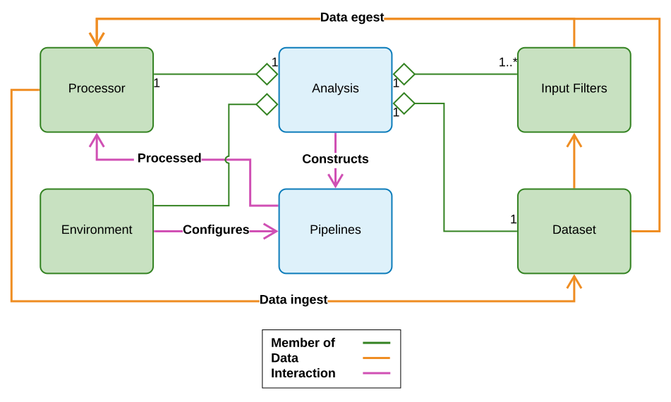

name: inverse layout: true class: center, middle, inverse --- # Arcana ## Object-Orientated Analyses ### ~60min --- name: content class: left layout: false name: intro ## Object-Orientated Analyses * What do we mean by [object-orientated](background_python_and_jupyter_notebook.html#24)? * Nipype classes/objects relate to workflow concepts * Interfaces, Nodes, Workflows, etc... * In Arcana analyses are implemented in *Analysis* classes * Sub-classes specialised per dataset type (e.g. DWI, FLAIR, PET) or study * *Analysis* objects created when analysis is applied to a specific dataset * Select outputs generated from "derivatives menu" on user request * Intermediate derivatives stored in repository for reuse <div class="footer">See <a href="https://dx.doi.org/10.1007/s12021-019-09430-1"> <i>NeuroInformatics</i> manuscript</a> for full details (<i>Analysis</i> a.k.a. <i>Study</i>)</div> --- ## Key Advantages of Object-Orientated Analyses * "Arcana of neuroimaging" (secrets/mysteries) *encapsulated & abstracted* by modular pipelines and meta-parameters * Portable due to separation of design from application (classes vs objects) * Customisable/extensible via *inheritance* * Common operations implemented in base classes * Safely specialise to needs of your study <figure style="float: right; margin-left: auto; margin-right: 0%; width: 60%; margin-top: 0%;"> <img src="images/oo-concepts.png" width="100%"/> </figure> --- name: arcana_overview ## Arcana Objects and Their Interactions  --- .left-column[ ## Applying Analysis Classes ### ~30min ] .right-column[ Please go through the [`Applying Analysis Classes Notebook`](../../notebooks/notebooks/arcana_application.ipynb) (Right-click and open in new tab) ] --- ## Recap of Applying Arcana Analysis Classes - Part 1 * **Repository**: The place where your data is stored ```python from arcana import BasicRepo repo = BasicRepo('/path/to/your/directory') ``` -- * **Processor**: How the data is to be processed ```python from arcana import SingleProc processor = SingleProc('/path/to/work/dir', reprocess=True) ``` -- * **Environment**: The software environment (i.e. toolkit versions) used ```python from arcana import ModulesEnv environment = ModulesEnv(name_map={'fsl': 'fsl-parallel'}) ``` --- ## Recap of Applying Arcana Analysis Classes - Part 2 * **Input Filters**: Map elements in your dataset to the `data specification` of the Analysis class ```python from arcana import InputFilesets inputs = [InputFilesets('magnitude', '.*t1.*')] ``` -- * **Analysis**: The object that aggregates all aspects of the analysis application ```python my_analysis = SomeAnalysisClass(name='my_analysis', repository=repo, processor=processor, environment=environment, inputs=inputs, parameters={'threhold': 10.5, 'bet_method': 'fsl'}) ``` -- * Generate selected outputs from "derivatives menu" ```python connectome, fa = my_analysis.derive('connectome', 'fa') ``` --- ## Anatomy of an Analysis Class <figure style="float: right; margin-left: auto; margin-right: 0%; width: 50%; margin-top: 5%; "> <figcaption>Incremental derivation of outputs</figcaption> </figure> * Data specification (files or fields) * Both inputs and derivatives * (Meta-)parameter specification * Switch toolkits (e.g. ANTs/FSL) * Expose free parameters * Pipeline constructor methods * Dynamically constructed * Inputs/outputs ref. data spec. --- .left-column[ ## Designing Analysis Classes ### ~30min ] .right-column[ Please go through the [`Designing Analysis Classes Notebook`](../../notebooks/notebooks/arcana_design.ipynb) (Right-click to open in new tab) ] --- ## Recap of designing Analysis classes - Part 1 * **Data specification**: specifies data that are inputs, outputs and intermediate-derivatives of the analysis * Either `Fileset` (a file, file + header, dir.) or `Field` (int, float, str,...) type ```python class MyAnalysisClass(Analysis): add_data_specs = [ FilesetSpec('magnitude', STD_IMAGE_FORMATS, desc="The magnitude image"), FilesetSpec('thresholded', nifti_gz_format, 'threshold_pipeline', desc="A thresholded magnitude Image"), FieldSpec('an_input_field', float, array=True)] ``` -- * **Parameter specification**: lists all parameters that are used to in the analysis ```python class MyAnalysisClass(Analysis): ... add_param_specs = [ ParamSpec('threshold', 0.5), SwitchSpec('bet_method', 'fsl')] ``` --- ## Recap of designing Analysis classes - Part 2 * **Pipeline constructors**: methods that generate modular pipelines ```python class MyAnalysisClass(Analysis): ... def threshold_pipeline(self, **name_maps): pipeline = self.new_pipeline('threshold', name_maps=name_maps) mrthreshold = pipeline.add( 'mrthreshold', mrtrix.MRThreshold( abs=self.parameter('threshold')), inputs={ 'in_file': ('magnitude', mrtrix_image_format)}) pipeline.add( 'fill_holes', Dialate( radius=2.0)), inputs={ 'in_file': (mrthreshold, 'out_file')}, outputs={ 'thresholded': ('out_file', mrtrix_image_format)} return pipeline ``` --- name: inverse layout: true class: center, middle, inverse --- name: questions # Questions?